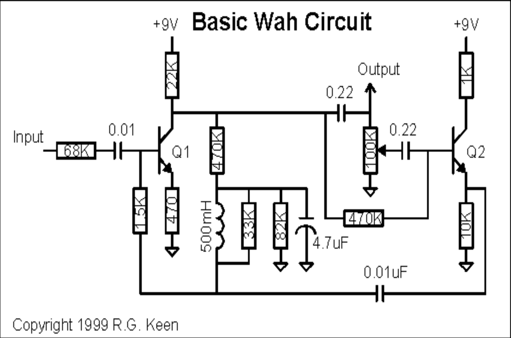
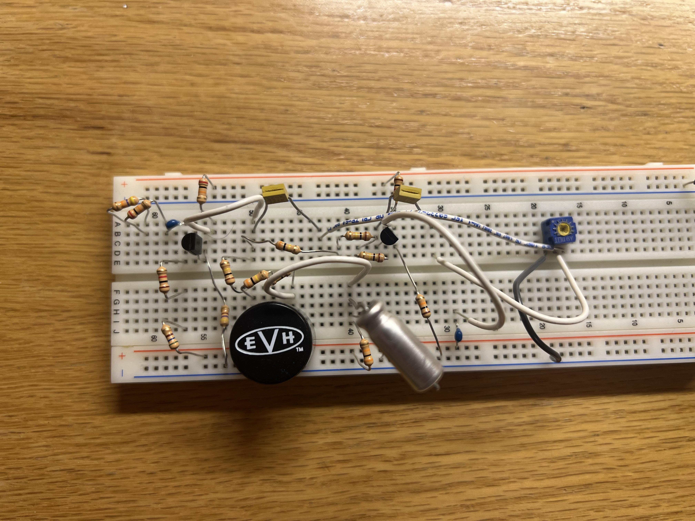
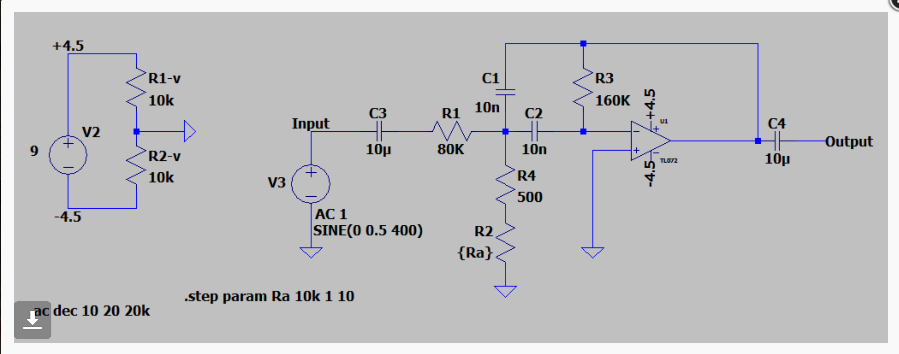
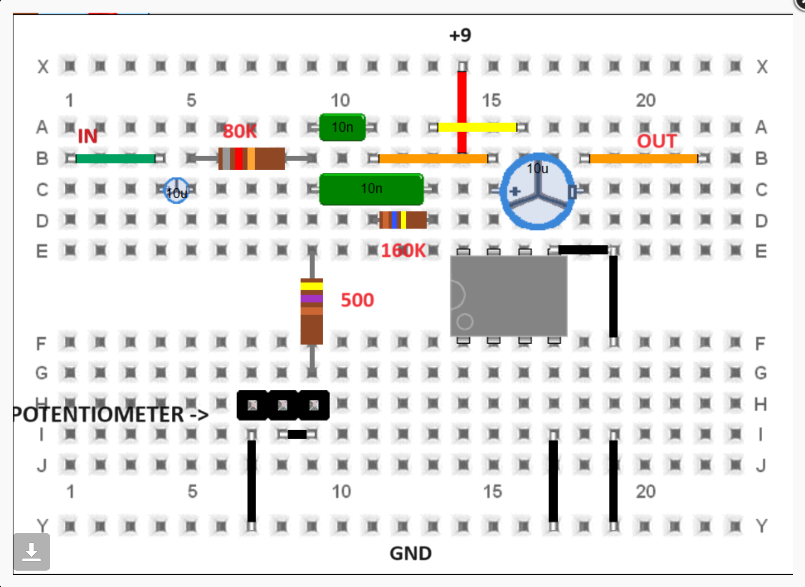
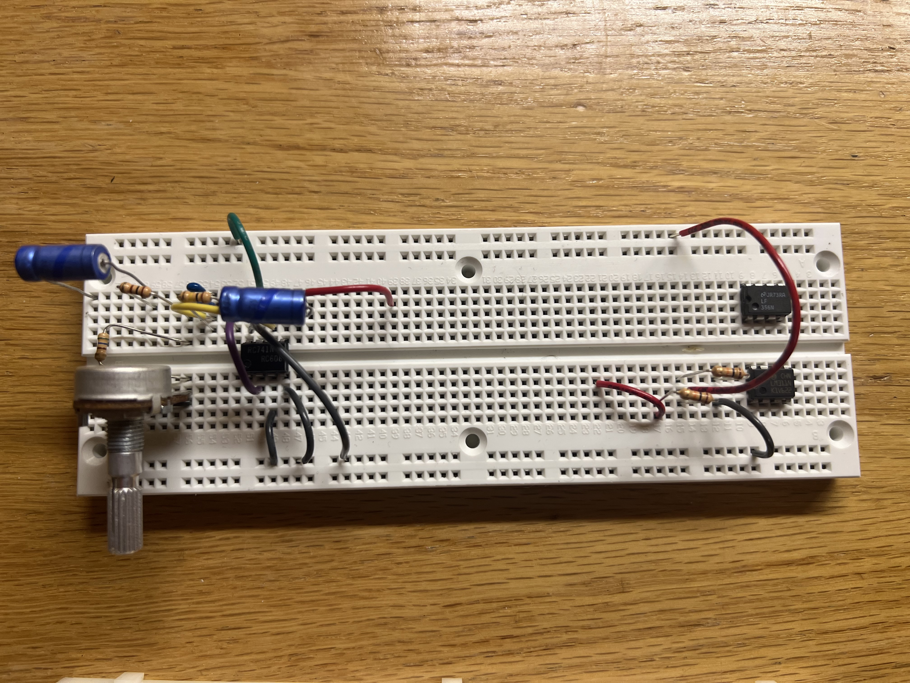
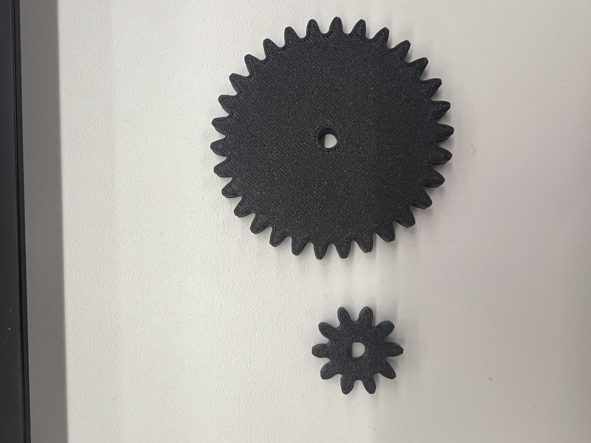

Minimum Viable Product: Make a serious attempt at the most challenging/intimidating aspect of your final project.
1. Include at least one input and one output device.
2. Write a microcontroller program that integrates at least one input device and one output device. Avoid the delay() function and use the C++ class structure.
3. Use an oscilloscope to discover the time domain at which your output device is operating. Is it on a fixed clock? What's its speed? Share images and describe your findings.
My goal for the MVP as I originally discussed with Kassia, was to get both my wah, and fuzz
pedals working, soldered, and connected with buttons. By connected with buttons, I mean I
wanted to get the logic figured out so that each pedal can be turned on individually and
when off there was a bypass wire so either could be off and you'd still hear the guitar. The
issue I ran into is that the buttons are not holding state buttons like I had expected, and
this makes the logic more complicated because I can't now easily choose between a bypass wire
or circuit to send the guitar input, unless I find a logic controller, get new buttons, or
figure out another way to do this as sending the input through the arduino would take a large hit
on sound quality and sort of defeat the purpose of making analog pedals in the first place.
Then, I focused on my wah pedal. What a journy that was. Is...
I began building this circuit, with the corresponding diagram shown below.


Unfortunately, this doesn't work. I hear sound come through, but it is relatively quiet, and the
potentiometer doesn't do anything near what I expect. It goes from guiet to non-existent. I spent
a while trying to fix this, I modeled the circuit in LTSpice to get approximate DC voltages I
should find and I found where it differes on my board (most places), but I couldn't figure out
why that was the case.
Then Nathan sent me this schematic. I built it on the breadboard as shown below the schematic,
and breadboard implimentation.



Now you think not too bad, there's even a breadboard implimentation! Well, one the power is
listed wrong, which is fine I made a voltage divider on the bottom of the image of my breadboard
(note that the op amps on that side aren't doing anything, I put them there for storage). In my
set up I am using an lm 741 so I had to wire things a little differently, hopefully not
incorrectly though. However, an LM741 is a single op amp that is not rail to rail and probably
a bit noisy. The op amp called for in the schematic is a rail to rail output dual op amp, although
he does indeed seem to only use one of those op amps so I thought my set up would work if a bit clipped.
It does not seem to work, I should take this in so someone else can listen in, but the potentiometer
doesn't seem to be doing what I expect it to, and the size of the pot seemed to have little to no effect
on the output, which makes no sense to me. I am truly lost, and getting sad at circuits.
As this is sort of at a stand still for now, I put more thought into the design of the pedal housing and
the mechanism behind it. I need to CAD the mechanism still but the plan is to hold the potentiometer
with propably some 3D printed part, 3D print a slightly curved piece with teeth that connects to the top
of the pedal and connects to gears on teh potentiometer to turn it. Then on the other side I would
connect a servo motor so that I can have a tempo button. When I tap three times on this button I want the
Arduino to calculate the average bpm I tapped, then convert this bpm to a speed on the servo motor. That is,
we want the time between two beats to be how long it takes the servo motor to go from 0 to 180 and back to 0.
Operating speed from 0 to 180 is 560ms so a sweep at max speed from 0 to 180 to 0 would be 1.2 seconds. This is
50bpm. Then I'll use gears to multiply the top speed to 150bpm so the servo should be able to sweep
fast enough.

I then wrote some code to try and do this. I used a class structure to check the button states and then logic to
figure out when it was clicked. I then tried to do something with the motor control to keep track of when to
sweep but I honestly lost track of the thread of thought and unsurprisingly the code does not work. The motor
only moves to 90. I'll try again soon using the sweep example and adding things to keep track. But I might
need some help with this as it might be more in depth than I originally thought. The current, non-functional
code, is below.
//servo operating speed can be 560 ms from 0-180 degrees, then two bottoms is 1.2 seconds, that's 50bpm, then I want
//a 3 to 1 ratio... then I want to know the button state and record the time between 3 button clicks, average
//the two and convert that to a bpm
#include
class Button{
//member variables
int buttonpin;
int buttonstate;
//constructor
public:
Button(int pin) {
buttonpin = pin;
pinMode(buttonpin, INPUT_PULLUP);
buttonstate = HIGH; //button not pressed...could also digital read it...constructor is just setting up the pin...read website
}
int Update(){
buttonstate = digitalRead(buttonpin);
return buttonstate;
}
};
Button motorbutton(3);
float first_millis;
float second_millis;
float third_millis;
int previous_state = HIGH;
int current_state;
int click_num = 0;
float time_int1;
float time_int2;
float bpm;
Servo servoMotor;
void setup() {
// put your setup code here, to run once:
servoMotor.attach(10);
Serial.begin(9600);
}
void loop() {
// put your main code here, to run repeatedly:
current_state = motorbutton.Update();
if (previous_state == HIGH && current_state == LOW) {
click_num = click_num + 1;
Serial.println("clicked");
}
if (click_num = 1) {
first_millis = millis();
} else if (click_num = 2) {
second_millis = millis();
} else if (click_num = 3) {
third_millis = millis();
}
time_int1 = second_millis-first_millis;
time_int2 = third_millis-second_millis;
bpm = 6000/((time_int1+time_int2)/2);
//every beat we want the motor to be at either 0 or 180, whatever is down which
//changes, so lets say down is 0,
static int servoPosition = 90;
static bool servoDirection = false; //false if down true if up
static unsigned long lastMoveTime = 0;
unsigned long currentTime = millis();
unsigned long moveInterval = 60000 / bpm; // Move servo every beat
if (currentTime - lastMoveTime >= moveInterval) {
lastMoveTime = currentTime;
if (!servoDirection) {
servoPosition = 0; // Move down
servoDirection = true; // Change direction
} else {
servoPosition = 90; // Move up
servoDirection = false; // Change direction
}
servoMotor.write(servoPosition);
Serial.println("servo moved");
}
}